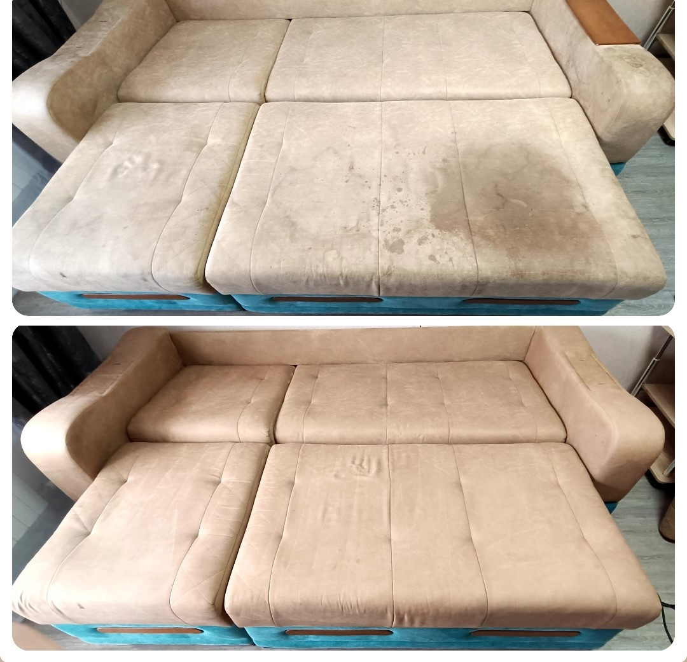
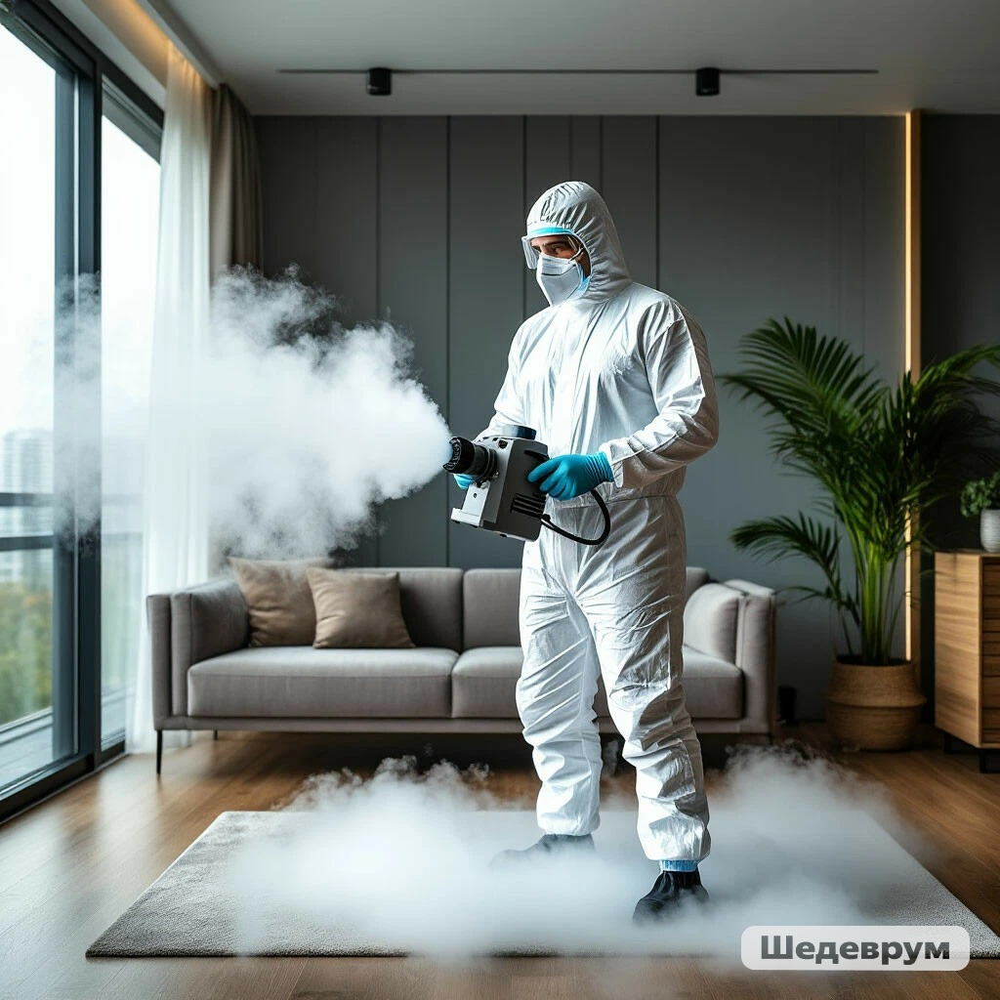
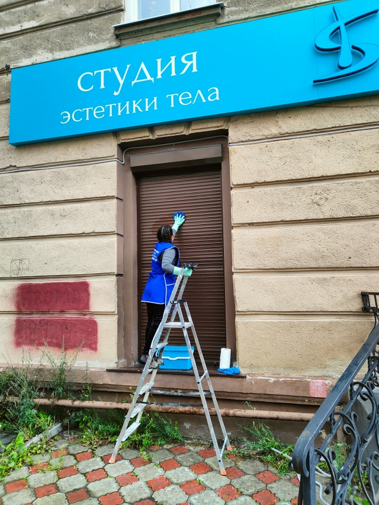

🧼 Химчистка мебели
Диваны, кресла, матрасы, ковры. Удаление любых пятен и запахов экстракторной чисткой.
Узнать цену →Профессиональная химчистка, дезинсекция, клининг в Нижнем Тагиле
Дмитрий | +7 (950) 642-22-92
Меня зовут Дмитрий, я профессиональный мастер по химчистке, дезинсекции и клинингу в Нижнем Тагиле. Работаю с 2018 года, выполнено более 1000 заказов. Использую современное оборудование (Santoemma, Stihl SR 430, Airofog U260, озонатор OZONBOX AIR-15) и безопасные сертифицированные препараты.
Предлагаю полный спектр услуг для вашего дома, дачи или офиса. Работаю напрямую, без посредников. Гарантия качества, фиксированная цена, выезд на дом.

Диваны, кресла, матрасы, ковры. Удаление любых пятен и запахов экстракторной чисткой.
Узнать цену →
Уничтожение клопов, тараканов, муравьев, блох. Метод холодного тумана, препараты 4 класса.
Узнать цену →
Генеральная уборка, после ремонта, мытье окон и фасадов. Профессиональная химия и инвентарь.
Узнать цену →Удаление любых запахов: табак, гарь, плесень, животные. Полная дезинфекция воздуха.
Узнать цену →Уничтожение клещей на участках и дачах. Мотоопрыскиватель Stihl SR 430, гарантия 3 дня.
Узнать цену →